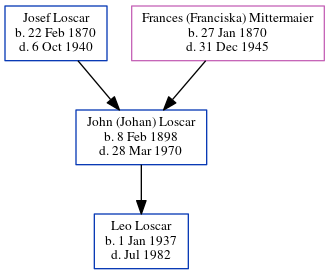

John (Johan) Loscar 1898 - 1970
[ Home ] | [ Calendar ] | [ Surnames Index ] | [ Family History ]The child of Josef Loscar (a hatmaker) and Frances (Franciska) Mittermaier, John Loscar, the great-uncle of Michele Copp (née Phillips), was born in Germany on Feb 8, 18981. He had 1 child, Leo B.
He died on Mar 28, 1970 in Wheeling, Ohio, West Virginia, USA1.
Parents
- Josef was born on Feb 22, 1870
- Frances (Franciska) was born on Jan 27, 1870
Children
- Leo B was born on Jan 1, 1937
Citations
- Social Security Death Index Online publication - Provo, UT, USA: MyFamily.com, Inc., 2006.Original data - Social Security Administration. Social Security Death Index, Master File. Social Security Administration.Original data: Social Security Administration. Social Security Death Inde
Family Tree
Generated by ged2site. Last updated on Jun 25, 2024